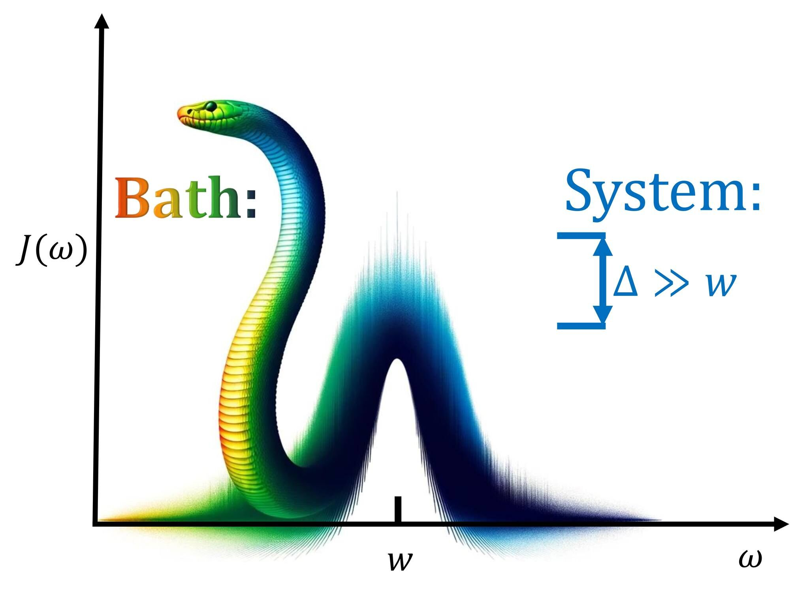

High-frequency tails in spectral densities

×
R Korol, X Chen, and I. Franco
J. Phys. Chem. A 2025 10.1021/acs.jpca.5c00943.
We show that the computations of relaxation rate in solution are highly sensitive to the choice of representation of the environmental spectral density (SD). The key reason is that electronic relaxation is dominated by the resonant contribution from the high-frequency tails of the SD, which can vary significantly between strategies. We provide a simple transformation that recovers the correct relaxation rates in quantum simulations constrained by algorithmic or physical limitations on the shape of the SD.